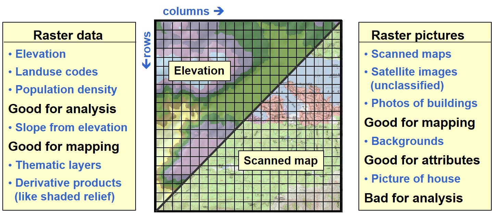
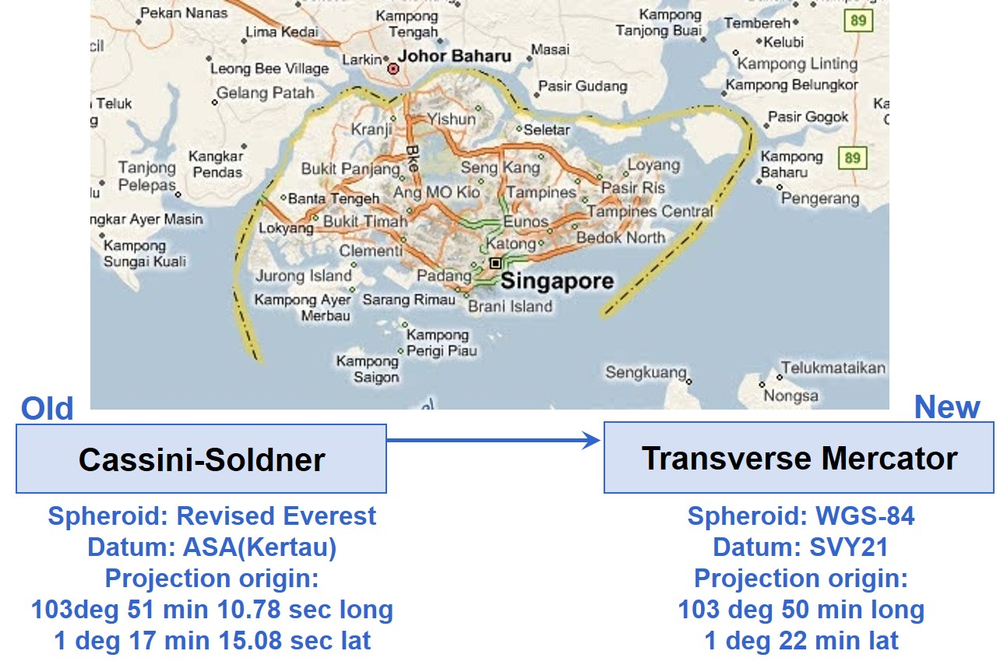
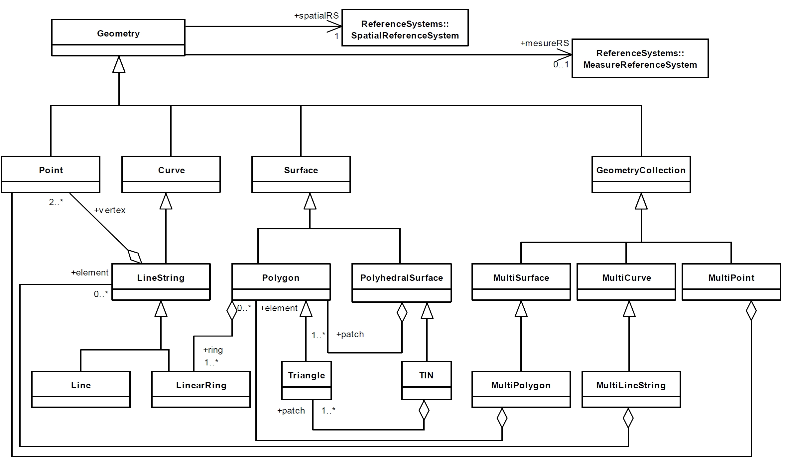
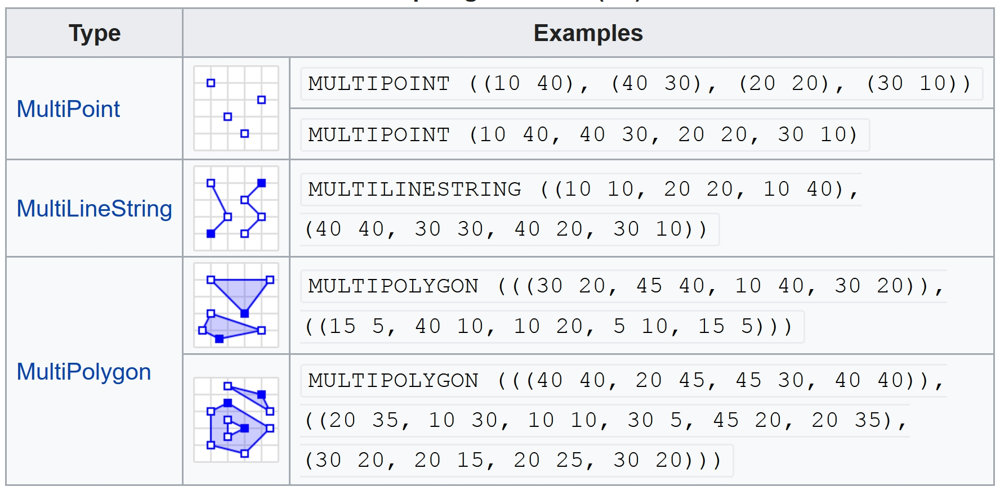
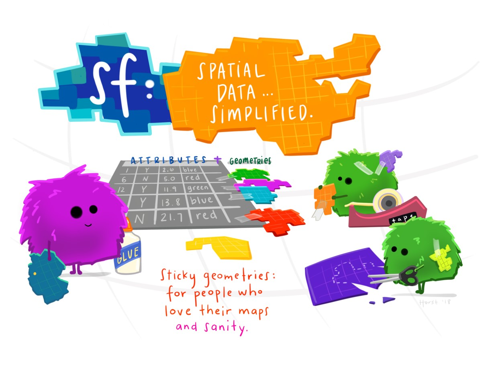
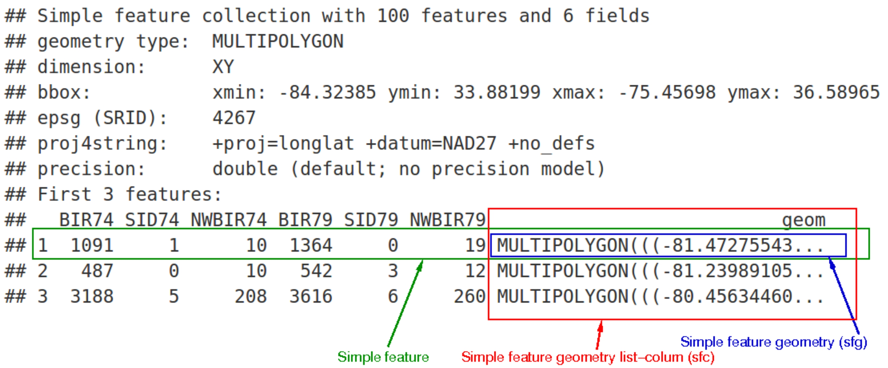
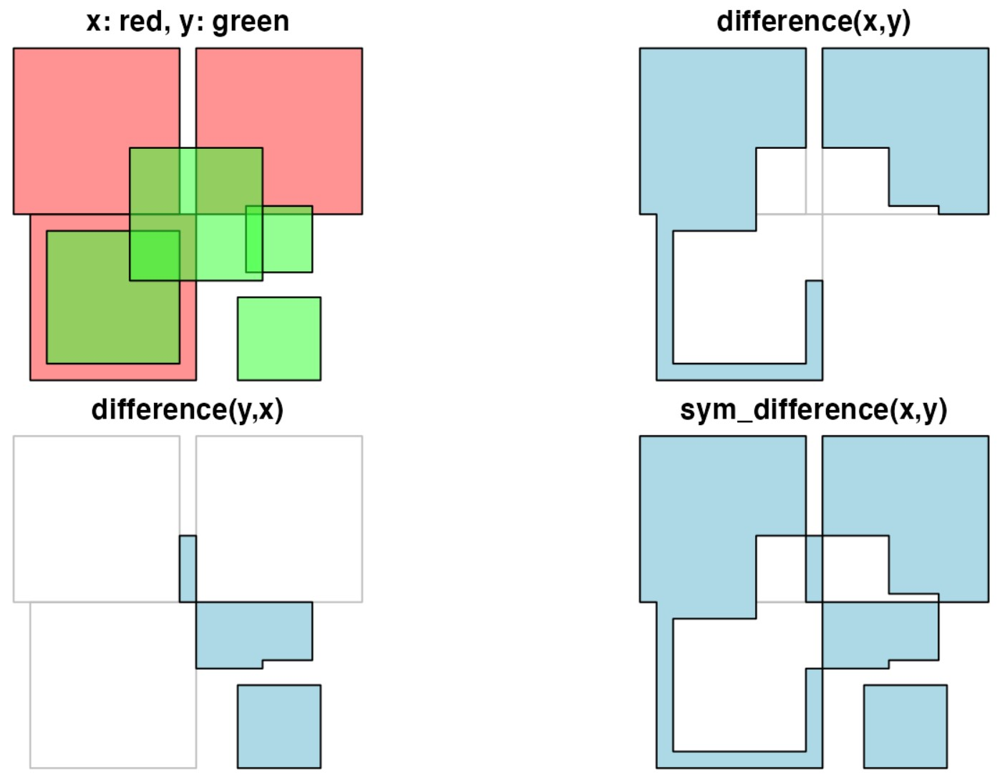

sf_mpsz = st_read(dsn = "data/geospatial",
layer = "MP14_SUBZONE")Lesson 1: Geospatial Data Science with R: sf approach and methods
Content
An overview of Geospatial Data Models
- Vector and raster data model
- Coordinate systems and map projection
Handling Geospatial Data in R: An Overview
Simple features approach
- sf package
This lesson consists of two parts. First, I will talk about Geospatial Data Models. For students who have taken SMT201 GIS for Urban Planning, this is not new at all. However, for students who did not read SMT201, this will be new. Anyway, the focus of this section will be on R. Hence, even for students who have taken SMT201 before, this will be a good revision.
In part two of this lesson, I will introduce sp package. It is a relatively new R package specially developed to handle geospatial data R using tidyverse principle.
Geospatial Data Models
Why should we worry about?
It is important for us to note that what ever data capture in a database is a model of the real world. When we say model, this means that it is a simplify version of the real world and not the real world themselves.
Basic Spatial Data Models
- Vector - implementation of discrete object conceptual model
- Point, line and polygon representations.
- Widely used in cartography, and network analysis.
- Raster – implementation of field conceptual model
- Array of cells used to represent objects.
- Useful as background maps and for spatial analysis.
In general, there are two types of geospatial data models, namely vector and raster data models.
Vector data model tends to be used to store geospatial data that are discrete in nature. For example bus stop, building footprint, planning area.
Raster data model, one the other hands, are used to store continuous fenomena such as air polution, elevation and precipitation.
Vector Data Models
- There are three basic geometric primitives, namely: points, lines (or polylines) and polygons.

For vector data model, there are three most commonly used geometric primitives, namely: points, lines and polygons.
In this figure, building footprints are represented by polygon features, road reserves represented by polyline features, and convenient stores are represented by point features.
It it important to note that the geospatial information content of these three features are not the same.
- A point is composed of one coordinate pair representing a specific location in a coordinate system.
- A line or polyline is composed of a sequence of two or more coordinate pairs called vertices. For line beside the location information we also know the length.
- A polygon is composed of three or more line segments whose starting and ending coordinate pairs are the same. For polygon, we know location, length (i.e. parameter) and area.
Raster Data Models
- All raster formats are basically the same
- Cells organized in a matrix of rows and columns.
- Content is more important than format: data or picture?

Different from vector data model, a single feature type is used to represent the real world. The most commonly used geometric is grid. Also note that in raster data model, the observed values (i.e. precipitation) are encoded explicitly on the cells. In general a value between 0-255 (binary data strcuture) is used. If the value is greater than 255, streching will be applied.
Coordinate Systems and Map Projections
What is a coordinate system?
A coordinate system is an important property of an geospatial data. It provides a location reference to the geospatial data.
- There are two common types of coordinate systems used in mapping, namely: geographic coordinate systems and projected coordinate system.
Further Reading
- Refer to this article and Chapter 9 Coordinate Systems to learn more about map projection.

A coordinate system is a reference system used to represent the locations of geographic features, imagery, and observations such as GPS locations within a common geographic framework.
Each coordinate system is defined by:
- Its measurement framework which is either geographic (in which spherical coordinates are measured from the earth’s center) or planimetric (in which the earth’s coordinates are projected onto a two-dimensional planar surface).
- Unit of measurement (typically feet or meters for projected coordinate systems or decimal degrees for latitude–longitude).
- The definition of the map projection for projected coordinate systems.
- Other measurement system properties such as a spheroid of reference, a datum, and projection parameters like one or more standard parallels, a central meridian, and possible shifts in the x- and y-directions.
Geographical Coordinate Systems
GCS define locations on the earth using a three-dimensional spherical surface. For example, WGS84.
They provides accuracy position information. Unit of measurement will be in either decimal degree or degree-minute-second format.
GCS, however, are not appropriate for distance and area measurements. In this figure, it is clear that 1 degree distance at the north pole is relatively shorter than 1 degree at the equator.

Further Reading
- Refer to 9.1 Geographic Coordinate Systems to learn more about GCS.
Projected Coordinate Systems (PCS)
Based on a map projection such as transverse Mercator, Albers equal area, or Robinson.
PCS provides consistent length and area measurement across space. Hence, it is important to transform a geospatial data from GCS to PCS before performing geospatial analysis.

Further Reading
- Refer to 9.2 Projected Coordinate Systems to learn more about GCS.
A projected coordinate system based on a map projection such as transverse Mercator, Albers equal area, or Robinson, all of which (along with numerous other map projection models) provide various mechanisms to project maps of the earth’s spherical surface onto a two-dimensional Cartesian coordinate plane.
Projected coordinate systems are sometimes referred to as map projections. For example, SVY21, the national projected coordinate system of Singapore.
Singapore Projected Coordinate System

epsg.io provides a comprehensive list of country coordinate systems such as svy21.
Each country will have her own projected coordinate system. Some country have more than one type of Project Coordinate Systems.
There are at least three coordinate systems commonly used in Singapore. They are svy21, Kertau Cassini 1968, and Rectified Skewed Orthomorphic (RSO). RSO is used in military and topographical mapping and svy21 is used for land and engineering surveying, cadastre, landuse and infrastructure mapping.
Coordinates Reference Systems in R
- In R, the notation used to describe the CRS is proj4string from the PROJ.4 library. It looks like this:
+proj=tmerc +lat_0=1.366666666666667 +lon_0=103.8333333333333 +k=1 +x_0=28001.642 +y_0=38744.572 +ellps=WGS84 +units=m +no_defs
- This library is interfaced with R in the rgdal package, and the CRS class is defined partly in sp, partly in rgdal.
- A CRS object is defined as a character NA string or a valid PROJ.4 CRS definition.
You can break down the proj4 string into its individual components (again, separated by + signs) as follows:
- +proj=tmerc: the projection is Transverse Mercator
- +lat_0: Latitude of origin
- +lon_0: Central meridian
- +k: Scaling factor
- +x_0: False easting
- +y_0: False northing
- +units=m: the units for the coordinates are in METERS
- +ellps=WGS84: the ellipsoid (how the earth’s roundness is calculated) for the data is WGS84
- The EPSG list among other sources is used in the workhorse PROJ.4 library, which as implemented by Frank Warmerdam handles transformation of spatial positions between different CRS.
Standard for Geospatial Data Handling and Analysis

Further Reading
For more information, visit this link.
The OGC OpenGIS Implementation Standard for Geographic Information / ISO 19125 defines:
- Geometric objects which can be of type point, line, polygon, multi-point, etc, and are associated to a given Coordinate Reference System;
- Methods on geometric objects return properties like dimension, boundary, area, centroid, etc;
- Methods for testing spatial relations between geometric objects equals, disjoint, intersects, touches, crosses, within, contains, overlaps and relate, which returns TRUE or FALSE;
- Methods that support spatial analysis distance, which returns a distance, and buffer, convex hull, intersection, union, difference, and symmetric difference, which returns new geometric objects.
Source: www.opengeospatial.org/standards/sfa
An introduction to simple features
feature: abstraction of real world phenomena (type or instance); has a geometry and other attributes (properties)
simple feature: feature with all geometric attributes described piecewise by straight line or planar interpolation between sets of points (no curves)
It is a hierarchical data model that simplifies geographic data by condensing a complex range of geographic forms into a single geometry class.
Simple features specification
- Simple features specification is an open standard developed and endorsed by the Open Geospatial Consortium (OGC) to represent a wide range of geographic information.

There are a total of 17 geometric types in OGC Simple Features specification. They are:
Commonly used simple features

Only 7 out of 17 possible types of simple feature are currently used in the vast majority of GIS operations. They are:
Simple Features: How they look like?

Simple Features: How they look like?

Simple Features: How they look like?
- Geometry collection: GEOMETRYCOLLECTION (MULTIPOINT (5 2, 1 3, 3 4, 3 2), LINESTRING (1 5, 4 4, 4 1, 2 2, 3 2))

Geospatial Data Object Framework
To begin with, all contributed packages for handling spatial data in R had different representations of the data. This made it difficult to exchange data both within R between packages, and between R and external le formats and applications.
The first general package to provide classes and methods for spatial data types that was developed for R is called sp. It was first released on CRAN in 2005.
In late October 2016, sf was first released on CRAN to provide standardised support for vector data in R.
R packages that support spatial classes
In general, three R packages will be used to handle vector-based geospatial data in spatial classes, they are:
Introducing sf Package
- sf package provides a syntax and data-structures which are coherent with the tidyverse.
- A quick introduction can be found here.
- For more detail, visit this link.

sf package dependencies

Source: Tidy spatial data analysis
The sf package depends on several external software components (installed along with the R package27), most importantly GDAL, GEOS and PROJ (Figure 7.3). These well-tested and popular open-source components are common to numerous open-source and commercial software for spatial analysis, such as QGIS and PostGIS.
sf & tidyverse
- sf spatial objects are data.frames (or tibbles)
- you can always un-sf, and work with tbl_df or data.frame having an sfc list-column
- sf methods for filter, arrange, distinct, group_by, ungroup, mutate, select have sticky geometry
- st_join() joins tables based on a spatial predicate
- summarise unions geometry by group (or altogether)
Another important feature of sf package is that it is designed base on tidyverse philosophy.
What is so special about sf?
- It builds upon the simple features standard (not R specific!), represents natively in R all 17 simple feature types for all dimensions (XY, XYZ, XYM, XYZM),
- uses S3 classes: simple features are data.frame objects (or tibbles) that have a geometry list-column,
- interfaces to GEOS to support the DE9-IM,
- interfaces to GDAL with driver dependent dataset or layer creation options, Date and DateTime (POSIXct) columns, and coordinate reference system,
- transformations through PROJ.4,
- provides fast I/O with GDAL and GEOS using well-known-binary written in C++/Rcpp, and
- directly reads from and writes to spatial databases such as PostGIS using DBI.
sfg : geometry for one feature

sf: objects with simple features

- In green a simple feature: a single record, or data.frame row, consisting of attributes and geometry.
- In blue a single simple feature geometry (an object of class sfg).
- In red a simple feature list-column (an object of class sfc, which is a column in the data.frame).
One of the attributes of a geometry list-column (sfc) is the precision: a double number that, when non-zero, causes some rounding during conversion to WKB, which might help certain geometrical operations succeed that would otherwise fail due to floating point representation.
The model is that of GEOS, which copies from the Java Topology Suite (JTS), and works like this:
- if precision is zero (default, unspecified), nothing is modified.
- negative values convert to float (4-byte real) precision.
- positive values convert to round(x*precision)/precision.
sf functions
Geospatial data handling
Geometric confirmation
Geometric operations
Geometry creation
Geometry operations
Geometric measurement
Geospatial data handling functions
- st_read & read_sf: read simple features from file or database, or retrieve layer names and their geometry type(s)
- st_write & write_sf: write simple features object to file or database
- st_as_sf: convert a sf object from a non-geospatial tabular data frame
- st_as_text: convert to Well Known Text(WKT)
- st_as_binary: convert to Well Known Binary(WKB)
- st_as_sfc: convert geometries to sfc (e.g., from WKT, WKB) as(x, “Spatial”): convert to Spatial*
- st_transform(x, crs, …): convert coordinates of x to a different coordinate reference system
Popular geospatial data format supported by read_st(): ESRI shapefile
- A shapefile is a simple, non-topological format for storing the geometric location and attribute information of geographic features.
- Geographic features in a shapefile can be represented by points, lines, or polygons (areas).
Sample code chunk:
and
st_write(st_poly, "data/my_poly.shp")
Other vector GIS formats
- MapInfo TAB format - MapInfo’s vector data format using TAB, DAT, ID and MAP files.
- Personal Geodatabase - Esri’s closed, integrated vector data storage strategy using Microsoft’s Access MDB format
- Keyhole Markup Language (KML) - XML based open standard (by OpenGIS) for GIS data exchange.
- Geography Markup Language (GML) - XML based open standard (by OpenGIS) for GIS data exchange.
- GeoJSON - a lightweight format based on JSON, used by many open source GIS packages.
- TopoJSON, an extension of GeoJSON that encodes topology.
Sample code chunk to import kml file:
sf_preschool = st_read("data/geospatial/pre-schools-location-kml.kml")Geometric confirmation
The commands below compare two sf data object and return a sparse matrix with matching (TRUE) indexes, or a full logical matrix.
- st_intersects: touch or overlap
- st_disjoint: !intersects
- st_touches: touch
- st_crosses: cross (don’t touch)
- st_within: within
- st_contains: contains
- st_overlaps: overlaps
- st_covers: cover
- st_covered_by: covered by
- st_equals: equals
- st_equals_exact: equals, with some fuzz returns a sparse (default) or dense logical matrix
Note
These functions return a logical matrix indicating whether each geometry pair meeting the logical operation.
sf Methods
Geometry generating logical operators
These commands overlay two sf data frames.
- st_union: union of several geometries
- st_intersection: intersection of pairs of geometries
- st_difference: difference between pairs of geometries
- st_sym_difference: symmetric difference (xor)

sf Methods
Higher-level operations: summarise, interpolate, aggregate, st_join
- aggregate and summarise use st_union (by default) to group feature geometries
- st_interpolate_aw: area-weighted interpolation, uses st_intersection to interpolate or redistribute attribute values, based on area of overlap:
- st_join uses one of the logical binary geometry predicates (default: st_intersects) to join records in table pairs.
rd_joined = st_join(random_points, world) Manipulating geometries
The commands below perform unary operations on simple feature geometry sets.
- st_line_merge: merges lines
- st_segmentize: adds points to straight lines
- st_voronoi: creates voronoi tesselation
- st_centroid: gives centroid of geometry
- st_convex_hull: creates convex hull of set of points
- st_triangulate: triangulates set of points (not constrained)
- st_polygonize: creates polygon from lines that form a closed ring
- st_simplify: simplifies lines by removing vertices
- st_split: split a polygon given line geometry
- st_buffer: compute a buffer around this geometry/each geometry
- st_make_valid: tries to make an invalid geometry valid (requires lwgeom)
- st_boundary: return the boundary of a geometry
centroid_poly <- st_centroid(poly)
buf_poly <- st_buffer(poly, 5)Convenience functions
- st_zm: sets or removes z and/or m geometry
- st_coordinates: retrieve coordinates in a matrix or data.frame
- st_geometry: set, or retrieve sfc from an sf object
- st_is: check whether geometry is of a particular type